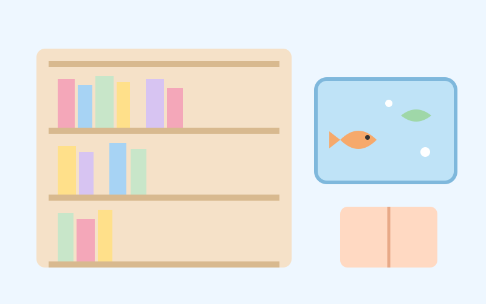

📚 בוקר טוב חינוך
ספרייה לילדים עם אקווריום דיגיטלי נפתחה בסיאול
28 באוקטובר 2026 ממהדורה 5 · 1 בנובמבר 2026
ב־28 באוקטובר 2026 נפתחה ברובע יונגסאן שבסיאול, בירת דרום קוריאה, ספרייה חדשה לילדים וילדות שמתמקדת בספרים באנגלית.
בספרייה יש חדרי קריאה, אקווריום דיגיטלי ופעילות עם בינה מלאכותית בשם ״Be a Talkie!״. יש גם תוכנית של משימות בשם ״חוקרי הספרייה״, שמזמינה את הילדים והילדות לגלות את המקום, וגם להורים יש הרצאות.
בנובמבר מתקיימות תוכניות ניסיון, ומדצמבר תתחיל התוכנית הקבועה. הרעיון: ללמוד שפה חדשה דרך משחק, סקרנות וסיפורים, ולא רק דרך שיעורים.
💬 לחשוב ולשוחח: אם הייתם ואתן מתכננים ספרייה חלומית לכיתה, מה היה בה כדי שכולם וכולן ירצו לקרוא?
מקורות וקרדיטים
📰 מקורות המידע
- Yongsan opens English library for kids combining AI tech, interactive exhibits · The Korea Times (29 באוקטובר 2026)
📖 להעמיק ולקרוא עוד
תמונה: איור מקורי של Kita · רישיון: מותר לשימוש חינוכי
הידיעה נכתבה במילים שלנו על סמך המקורות.